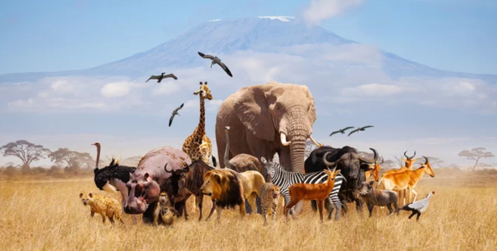

In previous sections, we worked with animals’ names and adjectives both comparative and superlative. This is an amazing topic because everyone likes animals and learning about them is very curious. In today's lesson, we're taking a look at the animal world and finding information about peculiar animals. Let’s explore!
